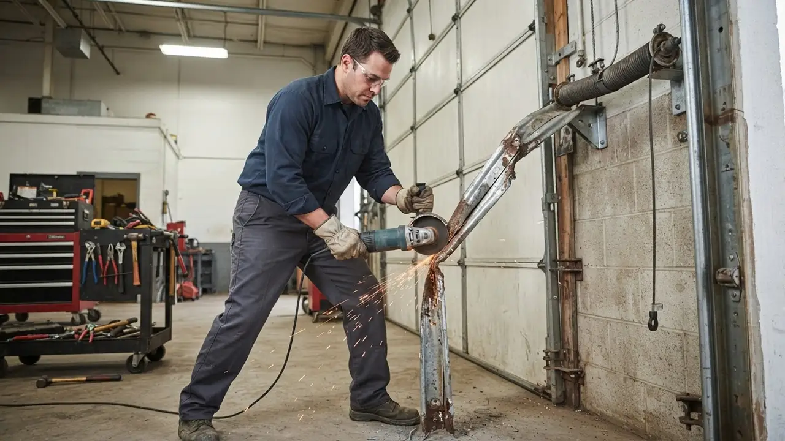

Garage Door Service Across Wilmington
We cover the whole city and the surrounding county, from the older streets near Brandywine Village to the newer builds out toward Prices Run. If you are in New Castle County and need a garage door company Wilmington DE homeowners actually recommend, we are close by. Here is where we work most.
Local teams, familiar routes
Garage Door Service Across Wilmington
We cover the whole city and the surrounding county, from the older streets near Brandywine Village to the newer builds out toward Prices Run. If you are in New Castle County and need a garage door company Wilmington DE homeowners actually recommend, we are close by. Here is where we work most.
01Downtown WilmingtonGarage Door RepairExplore area 02RiverfrontGarage Door RepairExplore area 03The HighlandsGarage Door RepairExplore area 04Trolley SquareGarage Door RepairExplore area 05Forty AcresGarage Door RepairExplore area 06Baynard VillageGarage Door RepairExplore area 07Wawaset ParkGarage Door RepairExplore area 08Cool SpringGarage Door RepairExplore area 09Trinity VicinityGarage Door RepairExplore area 10BrowntownGarage Door RepairExplore area 11Little ItalyGarage Door RepairExplore area 12Union Park GardensGarage Door RepairExplore area 13HedgevilleGarage Door RepairExplore area 14Brandywine VillageGarage Door RepairExplore area 15East SideGarage Door RepairExplore area 16SouthbridgeGarage Door RepairExplore area 17PettinaroGarage Door RepairExplore area 18Lancaster VillageGarage Door RepairExplore area 19Prices RunGarage Door RepairExplore area 20North BrandywineGarage Door RepairExplore area
Local coverage
Service coverage built around practical routes.
We cover the whole city and the surrounding county, from the older streets near Brandywine Village to the newer builds out toward Prices Run. If you are in New Castle County and need a garage door company Wilmington DE homeowners actually recommend, we are close by. Here is where we work most.
Delaware Express Garage Door Service3601 Old Capitol Trl A5, Wilmington, DE 19808, United States, Wilmington, Delaware
Where we work
One local team. A lot of ground covered.
Downtown WilmingtonRiverfrontThe HighlandsTrolley SquareForty AcresBaynard VillageWawaset ParkCool SpringTrinity VicinityBrowntownLittle ItalyUnion Park Gardens
Check my address Your next step is waiting
Need Garage Door Repair Wilmington DE Today?
Broken spring, dead opener, or a door off track? Call (302) 556-5080 and we will get a tech out to you. Same-day service across Wilmington and New Castle County, with the parts already on the truck.